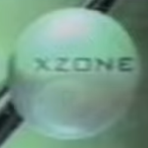
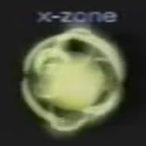

I was looking at old original Xbox proto dashboards when I noticed an unused section called XZone.
It doesn't appear on the one closest to the final so i belive it was scrapped at the last minute.
I know it's not the games page because it appears on the dashboards,
so I belive it's a prototype Xbox Live concept.


XZone in the blur dashboards
XZone in the frog dashboards

One reason why I think it's an xbox live prototype is that in the blur dashboard,
on the games page, it says local high scores implying non local high scores.
And since there's no Xbox Live, I belive XZone is a beta Xbox Live.